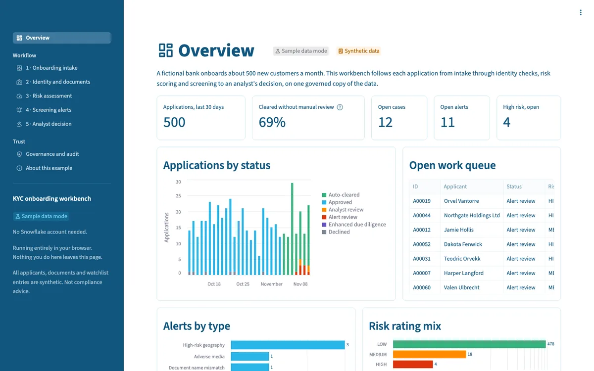
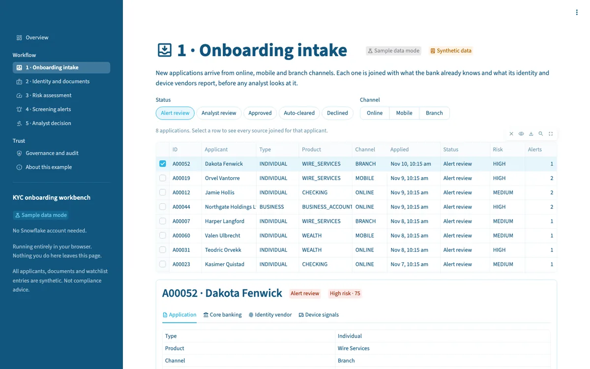
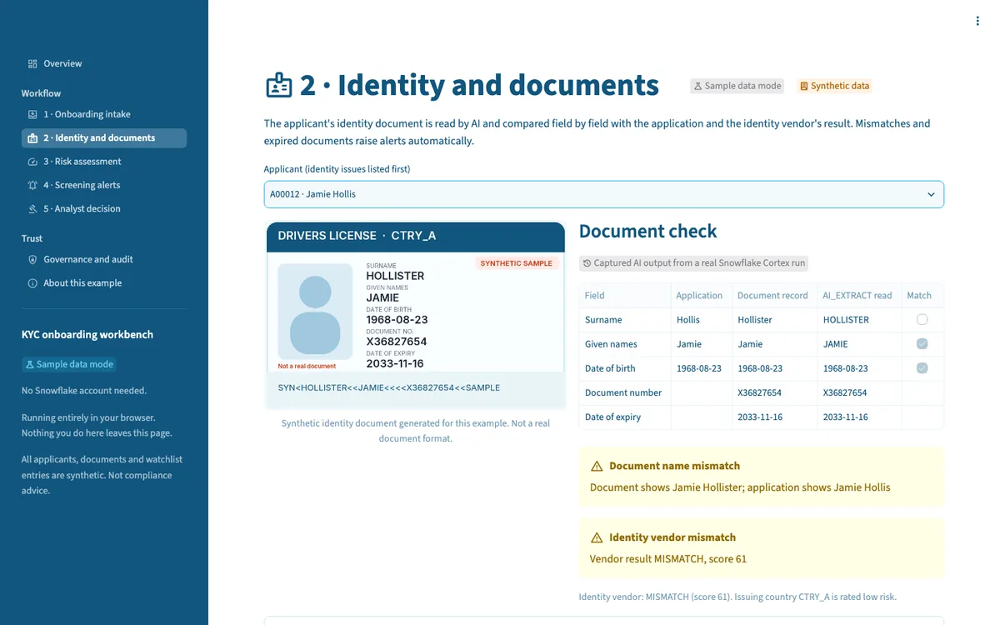
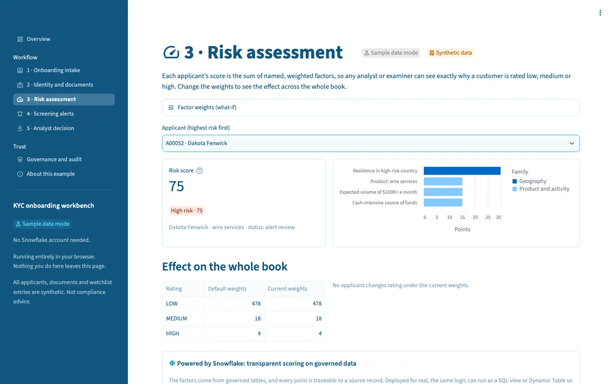
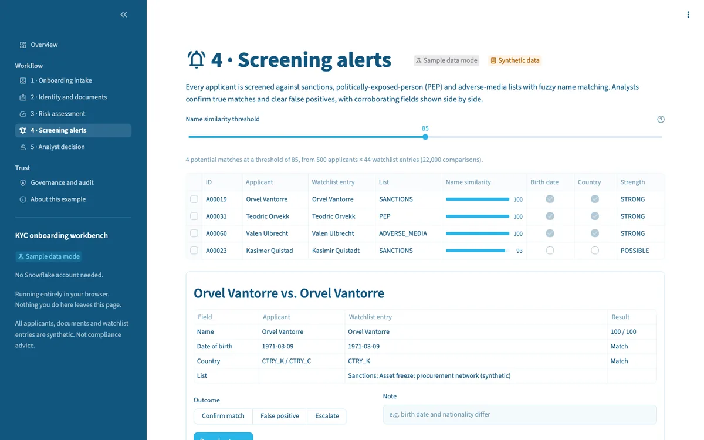
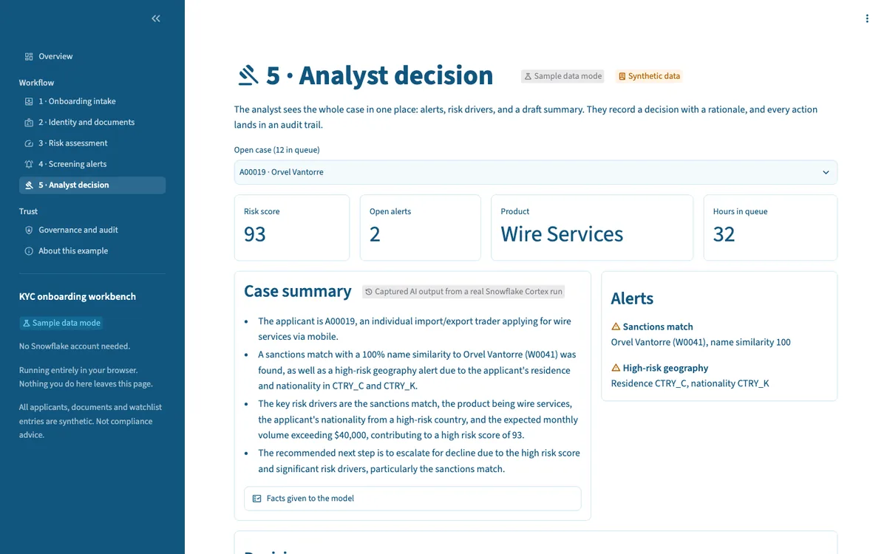
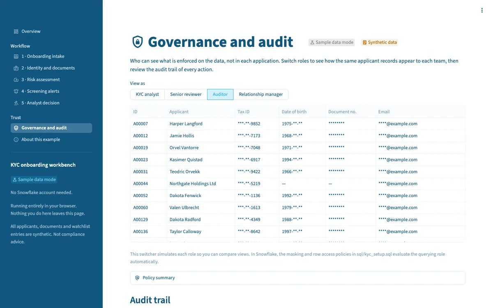

Onboarding Spread Across Too Many Systems
Know-your-customer (KYC) reviews often mean an analyst switching between an application system, an identity vendor portal, a screening tool and a spreadsheet, then writing a rationale nobody can easily find later. This workbench shows how one governed copy of the data can bring those steps together, with the decision and its evidence recorded in the same place.
Intake
Applications joined with core banking, identity-vendor and device data.
Identity
Cortex AI_EXTRACT reads the ID document and flags mismatches and expiry.
Risk and screening
Explainable factor scores and fuzzy sanctions, PEP and adverse-media matching.
Decision
An AI-drafted case summary, a required rationale, and an audit trail.
The Finished Workbench
These are screenshots of the running app in sample-data mode, the same version you can open in your browser. Every applicant, document and watchlist entry is synthetic.







Click Around First, Connect Later
The same Streamlit code runs both ways, so a business lead can explore it today and a technical team can run it on real infrastructure tomorrow.
Sample data, in your browser
- No Snowflake account, login or install
- Python runs in the browser with stlite
- AI outputs are captured from a real Cortex run and labeled
- Your decisions stay in your browser tab
Live, in your Snowflake account
- Deployed as Streamlit in Snowflake
- Screening runs
JAROWINKLER_SIMILARITYin SQL - Live Cortex
AI_EXTRACTandAI_COMPLETE - Masking and row access policies on the tables
- Decisions and audit events written to Snowflake
Deploy to Your Own Account
- Prerequisites: Enterprise Edition (masking and row access policies), Cortex AI functions in your region, a compute pool for Streamlit's container runtime, and an external access integration for PyPI.
- 1. Run the setup script. Run sql/kyc_setup.sql in a Snowsight worksheet. It creates
KYC_DEMO_DB, an XSMALL warehouse, empty tables with policies attached, a document stage and four audience roles. A least-privilege option is included at the top. - 2. Deploy the app. Clone the repo, set your compute pool and integration names in
snowflake.yml, then runsnow streamlit deploy --replace. - 3. Load the data. Open the app, go to About this example and select Load synthetic data.
- 4. Clean up. Uncomment and run Step 8 of the script to remove everything.
What Each Step Uses
Streamlit in Snowflake
The workbench runs next to the data, with the Snowflake session built in. No credentials leave the platform.
Cortex AI_EXTRACT
Reads named fields from identity documents on a stage with one SQL function.
Cortex AI_COMPLETE
Drafts grounded case summaries; the analyst makes every decision.
Masking and row access
Policies on the tables decide what each role sees, in every tool.